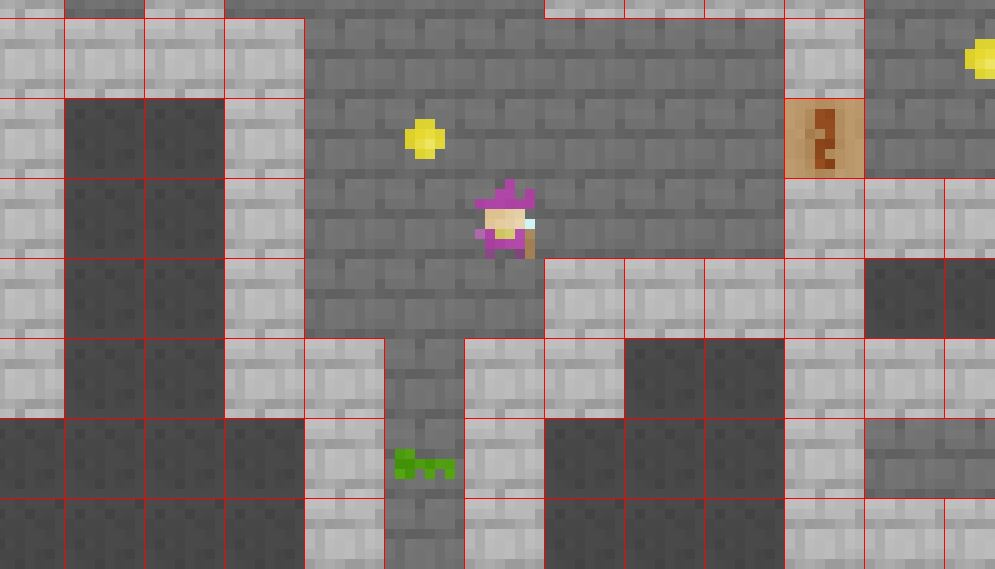

A blog about my coding projects. This project is maintained by j4cobgarby. Email me at j.garby@icloud.com
Tweets by @j4cobgarbyThe HUD isn't complete quite yet, but at the moment it displays the player's amount of coins, their health, and their mana. I've made a different class to achieve this, although I considered writing it in the Player class. Only for b0.04, you can press K, L, N, and M to increase and reduce health and mana.
The other change in this update is that when you collects coins, the game displays this in the HUD! So I was glad that I decided to include FreeType.
Click the button below if you want to play this game. Currently, there's no real objective, but hopefully in the next update I'll add functionality to the exit door.
This probably would've been released yesterday, soon after b0.02. However, I couldn't get it to stop crashing when a door was opened, as deleting the cell and then trying to render it threw a NullPointerException. An easy fix for this was to create a layer below the floor with the same texture as the actual floor, and a try-catch around the rendering. Anyway, the game is almost playable! Next, I'll add functionality to the exit door, work on the coins and scoring, and refine my code. As (almost) always, if you want to play it in it's current stage, the download is below!
Download β 0.03I'm not sure why this update took so long to release - mainly because there were a lot of bugs. Anyway, beta 0.02 has finally been released! This update doesn't add a lot (as it's based on an entire rewrite of the code). In this rewrite I completely rearranged the classes (moving level functions from Player to a new class called Level.) Also (not showing in the jar file), I've started to develop a system for keys, which will open the locks. The download's below, although it's not really the most interesting game right now.
Download β 0.02Finally, I've almost got the collisions to work. It probably should've been a lot easier but this is my first time using tiled. This isn't a proper release, but just a post to say that the next update should be out very, very soon. Here's an image of the debug view - proof that the collisions can and will work.
Here's a changelog of the latest version!
As you can see, this covers one of the plans for the game (health and mana). Next, I'll try to add collisions with the walls, and after that probably potions. I will make a basic inventory system with space for a key of each colour - the potions will be used as and when they're collected.
Download α 0.04Above is a screenshot of the first alpha release of my dungeon game. Right now, there's not too many features - there's a moveable player character, a level to move around and a camera to follow the character.
In the future, here are some things I plan to implement:
If you're reading this and have any good ideas for the game, you can email me at j.garby@icloud.com
Download α 0.01